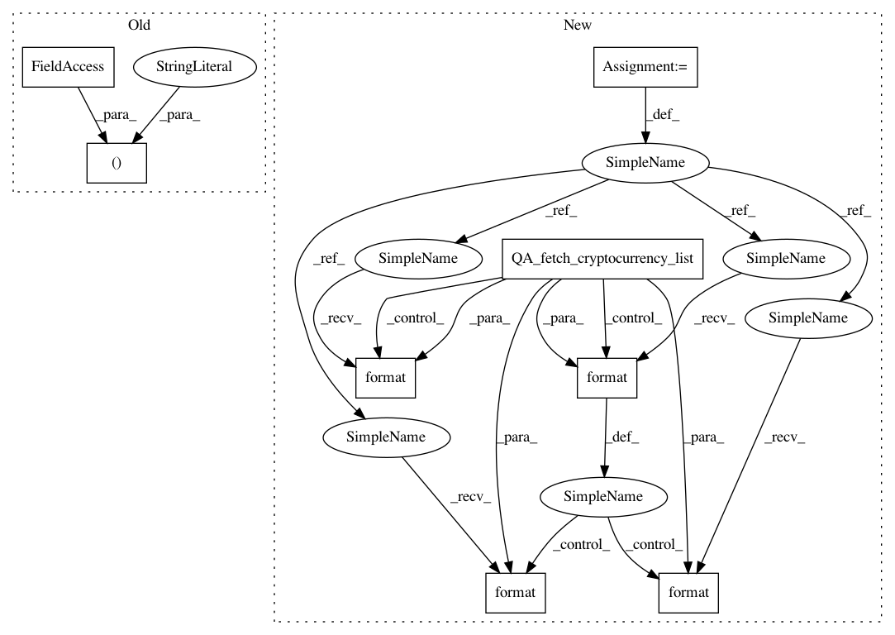

1d23b992191fde5403c1927efd339516fbee1a8c,QUANTAXIS/QASU/save_okex.py,,QA_SU_save_okex_min,#Any#Any#Any#,176
Before Change
)
col.create_index(
[
("market",
pymongo.ASCENDING),
("symbol",
pymongo.ASCENDING),
("type",
After Change
Save OKEx min kline 分钟线数据，统一转化字段保存数据为 crypto_asset_min
symbol_template = OKEx_SYMBOL
symbol_list = QA_fetch_cryptocurrency_list(OKEx_EXCHANGE)
col = DATABASE.cryptocurrency_min
col.create_index(
[
("symbol",
pymongo.ASCENDING),
("time_stamp",
pymongo.ASCENDING),
("date_stamp",
pymongo.ASCENDING)
]
)
col.create_index(
[
("symbol",
pymongo.ASCENDING),
("type",
pymongo.ASCENDING),
("time_stamp",
pymongo.ASCENDING)
],
unique=True
)
end = datetime.datetime.now(tzutc())
QA_util_log_info(
"Starting DOWNLOAD PROGRESS of min Klines from {:s}... ".format(OKEx_EXCHANGE),
ui_log=ui_log,
ui_progress=ui_progress
)
for index in range(len(symbol_list)):
symbol_info = symbol_list.iloc[index]
// 上架仅处理交易对
QA_util_log_info(
"The "{}" //{} of total in {}".format(
symbol_template.format(symbol_info["symbol"]),
index,
len(symbol_list)
),
ui_log=ui_log,
ui_progress=ui_progress
)
QA_util_log_info(
"DOWNLOAD PROGRESS {} "
.format(str(float(index / len(symbol_list) * 100))[0:4] + "%"),
ui_log=ui_log,
ui_progress=ui_progress
)
query_id = {
"symbol": symbol_template.format(symbol_info["symbol"]),
"type": OKEx2QA_FREQUENCY_DICT[frequency]
}
ref = col.find(query_id).sort("time_stamp", -1)
if (col.count_documents(query_id) > 0):
start_stamp = ref.next()["time_stamp"]
start_time = datetime.datetime.fromtimestamp(
start_stamp + 1,
tz=tzutc()
)
QA_util_log_info(
"UPDATE_SYMBOL "{}" Trying updating "{}" from {} to {}".format(
symbol_template.format(symbol_info["symbol"]),
OKEx2QA_FREQUENCY_DICT[frequency],
QA_util_timestamp_to_str(start_time),
QA_util_timestamp_to_str(end)
),
ui_log=ui_log,
ui_progress=ui_progress
)
// 查询到 Kline 缺漏，点抓取模式，按缺失的时间段精确请求K线数据
missing_data_list = QA_util_find_missing_kline(
symbol_template.format(symbol_info["symbol"]),
OKEx2QA_FREQUENCY_DICT[frequency],
)[::-1]
else:
In pattern: SUPERPATTERN
Frequency: 3
Non-data size: 8
Instances
Project Name: QUANTAXIS/QUANTAXIS
Commit Name: 1d23b992191fde5403c1927efd339516fbee1a8c
Time: 2020-03-24
Author: 11652964@qq.com
File Name: QUANTAXIS/QASU/save_okex.py
Class Name:
Method Name: QA_SU_save_okex_min
Project Name: QUANTAXIS/QUANTAXIS
Commit Name: 1d23b992191fde5403c1927efd339516fbee1a8c
Time: 2020-03-24
Author: 11652964@qq.com
File Name: QUANTAXIS/QASU/save_okex.py
Class Name:
Method Name: QA_SU_save_okex_min
Project Name: QUANTAXIS/QUANTAXIS
Commit Name: 1d23b992191fde5403c1927efd339516fbee1a8c
Time: 2020-03-24
Author: 11652964@qq.com
File Name: QUANTAXIS/QASU/save_bitfinex.py
Class Name:
Method Name: QA_SU_save_bitfinex_min
Project Name: QUANTAXIS/QUANTAXIS
Commit Name: 1d23b992191fde5403c1927efd339516fbee1a8c
Time: 2020-03-24
Author: 11652964@qq.com
File Name: QUANTAXIS/QASU/save_bitmex.py
Class Name:
Method Name: QA_SU_save_bitmex_day